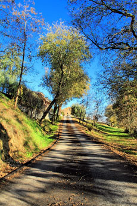

Countries and cohorts
[icon type=”Globe” style=”black” align=”left”]
Seven different countries
The Seven Countries Study effectively documented the variations in CHD risk related to diet and culture and demonstrated that the major risk factors are universal.Click on the the country map to learn more about its cohorts
The 16 cohorts
The cohorts in the Seven Countries were chosen as cultures apparently contrasting in lifestyle, eating habits, risk factor levels, and, presumably, incidence of and mortality from CHD, though the latter was unknown. They were not statistically representative of the correspondent countries and the choice was partly made on the basis of convenience. However, the objective was to recruit all men of a civic department. Men enrolled were aged 40 to 59 years at the time of first examination.
United States
The cohort of the US railroad was selected because of the excellent mortality registration of the railroad retirement board. The cohort consisted of men working in the mid-west and northwest areas of the US railroad industry and the enrolment of the men was based on the physical activity level of their occupations. Read more.
[fancy_images width=”450px” height=”159px”]
[image alt=”The US Rail car” caption=”The US Rail car – Blackburn-Keys Collection, University of Minnesota”]https://www.sevencountriesstudy.com/update/wp-content/uploads/2013/03/Railway_combined.jpg[/image]
Finland
 The cohort of East Finland was made by a “chunk sample” of all men in the rural village of Ilomantsi and surroundings, in the region of North Karelia, Finland. The principal occupation of the men of the Karelia cohort of the Seven Countries Study was in forestry. The choice was bound to the allegedly high incidence and mortality from CHD in that area.The cohort of West Finland was enrolled in the southwest part of the country as a “chunk sample” of all men in and around the rural village of Pöytyä and Mellilä. This was an area where incidence of CHD was thought to be lower then in the eastern part of the country, based on vital statistics. Read more.
The cohort of East Finland was made by a “chunk sample” of all men in the rural village of Ilomantsi and surroundings, in the region of North Karelia, Finland. The principal occupation of the men of the Karelia cohort of the Seven Countries Study was in forestry. The choice was bound to the allegedly high incidence and mortality from CHD in that area.The cohort of West Finland was enrolled in the southwest part of the country as a “chunk sample” of all men in and around the rural village of Pöytyä and Mellilä. This was an area where incidence of CHD was thought to be lower then in the eastern part of the country, based on vital statistics. Read more.
Netherlands
The cohort of Zutphen was chosen because of little mobility of the population and an earlier investigation for WHO had shown willingness to participate in an epidemiological investigation. A representative sample of all men resident of the commercial town of Zutphen in the eastern part of the Netherlands participated in the study. Read more.
Italy
The cohort of Crevalcore represented a “chunk sample” of all men living in the rural village of Crevalcore, located in northern Italy, in a plains area where the traditional diet was apparently rich in animal fat.The cohort of Montegiorgio represented a “chunk sample” of all men living in the rural village of Montegiorgio, located in central Italy, in a hilly area about 30 km inland from the Adriatic sea, apparently eating a more “Mediterranean diet” than in Crevalcore.The cohort of the Rome railroad represented the Italian counterpart of the US railroad group. Men working in four occupations with different levels of physical activity were enrolled in Rome and surroundings. Read more.
Greece
The cohort of Crete was made up by male residents of rural villages located inland from the northern coast, east of the capital of Heraklion of the island of Crete, Greece. Their diet was characterized by a very high olive oil intake.The cohort of Corfu was made up by men resident of seven rural villages located in the northern part of the island of Corfu, Greece. It was also among the highest olive oil consuming regions. Read more.
Former Yugoslavia
The cohort of Dalmatia was from a number of villages along the Adriatic Sea coast, south of the town of Split in Dalmatia, Republic of Croatia in the former Yugoslavia, characterized by a Mediterranean high vegetable diet.The cohort of Slavonia was enrolled from a number of scattered villages centered around the village of Dalj in the plain of Slavonia, Republic of Croatia in the former Yugoslavia. Their diet was presumably high in animal products.The cohort of Velika Krsna was made by a “chunk sample” of all men in the rural village of Velika Krsna located not far south from Belgrade, Republic of Serbia in the former Yugoslavia.The cohort of Zrenjanin was made by men working in an agro-industrial cooperative located in the town of Zrenjanin, north of Belgrade, Republic of Serbia in the former Yugoslavia.The cohort of Belgrade was made by the faculty members of the University of Belgrade, located in the capital of the Republic of Serbia in the former Yugoslavia. Read more.
{kind=link}
Japan
The cohort of Tanushimaru was a “chunk sample” of all men resident in the rural village and farming community of Tanushimaru, in the nothern part of the island of Kyushu.
Blackburn-Keys Collection, University of Minnesota